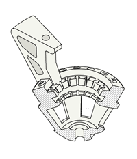
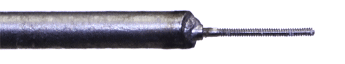
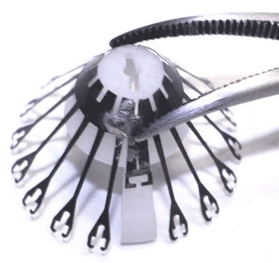
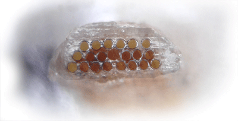
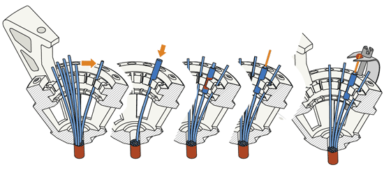

Drive body assembly
In this step, the electrode guide tube array and the spring are attached to the drive body.Next, individual guide tubes and arms of the spring are assembled into the drive mechanisms.

Clean printed drive body: check for extra plastic on the inside fins and guides
Depending on the quality of the 3d-print, finish the screw holes with #77 drill. Be careful to drill out the holes at the correct angle - with lower quality prints it is pretty easy to break through the inner wall of the drive body rim.

Carefully ‘tap’ screw holes by screwing a drive screw all the way in, and removing it from each hole. To speed up this step, solder a screw to a piece of metal to use as
handle.
Clean off plastic dust with water or ethanol, be careful when using ethanol as it will weaken the plastic when exposed for too long.

Align the spring with the sides of the drive body (the small protrusions on the drive body should fit into the cutouts on the solder tabs of the spring). Glue the spring to the drive body using epoxy both at the sides and around the bottom of the drive at the radial slot cutouts in the spring. Make sure the bottom and sides are making full contact to the drive body and let epoxy cure fully before bending the
spring arms. Placing the spring arms under screws while the epoxy still has even minimal creep can detach the spring.

Glue guide tube assembly into drive bottom with epoxy, make sure the guide
tubes are aligned. For most applications the tubes should be parallel to the main axis
of the drive, but deviations of up to 15deg. are possible if desired.
Cut the guide tube assembly about 5mm from the drive bottom using a fresh
razor blade. The length of the protruding guide tubes can be chosen to fit the
experimental design: Longer lengths increase visibility during the implant surgery
and are useful in order to leave space for head posts etc., but shorter lengths lower
the center of gravity on the head. If longer lengths are desired, make sure that a coat of epoxy extends all the way to the bottom, keeping the guide tubes in alignment.
For lateral targets, it might make sense to cut the guide tube array at an angle corresponding to the angle of the skull at the site.

For lateral targets, it might make sense to cut the guide tube array at an angle corresponding to the angle of the skull at the site.
Inspect the bottom of the guide tube array and check for any defects. Also document the position of the guide tubes so that the electrode positions can be reconstructed with better precision later on.

Move guide tubes into the row of slots at the insider perimeter of the drive body. Make sure to keep the tubes as straight as possible.
Hold guide tubes in place by sliding short pieces of 26ga polyimide tube over the
guide tube (also called 'stabilizer tube').
Glue guide tubes into place with thin layer of epoxy.

(optional) Map out the relationship between guide tubes at the drive bottom and the drives by inserting a thin wire into the guide tubes one at a time.
Cut the guide tubes so that they extend about 1 mm above the rim of the driv body.
Screw in the screws about half way, and bend and slide the spring arms under the screw heads.
Cut 16 pieces of 37 or 38 ga polyimide tubing to ~2cm to make the shuttle tubes.
Insert shuttle tubes into guide tubes so that they are inserted ~1mm at the most retracted position.
Glue shuttle tube to spring arm, use two layers of epoxy for added stability.
Cut the shuttle tubes tubes a few mm upwards from where they meet the springs.
If no optical fiber is used, the drive is now ready for attaching the EIB and electrode loading. Optical fibers
Cleave optical fiber to desired length, attach to ferrule and polish both ends.
(optional) cut a groove into the ferrule using a high-speed cutting wheel to improve adhesion of epoxy.
(or - if using fiber stubs with prepared ferrules), cut to length and polish bottom end.
Insert optical fibers into openings in the guide tube array, don’t glue them yet. The fibers are only held by attaching them to the EIB.
The drive is now ready for attaching the EIB and electrode loading.